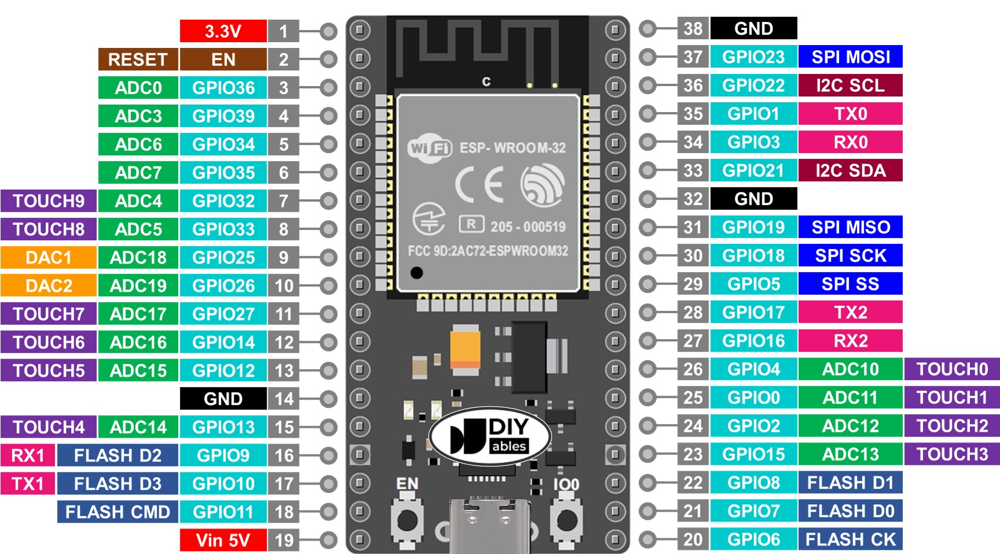
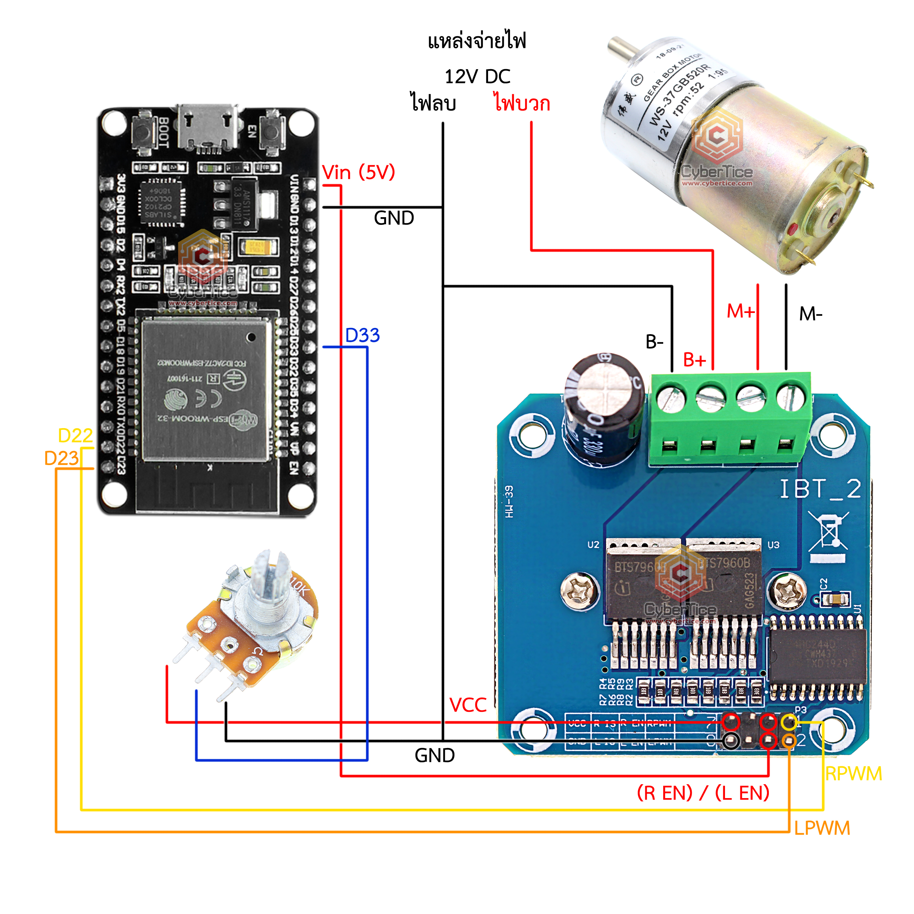
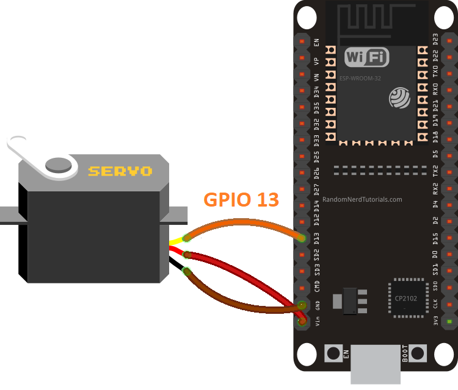
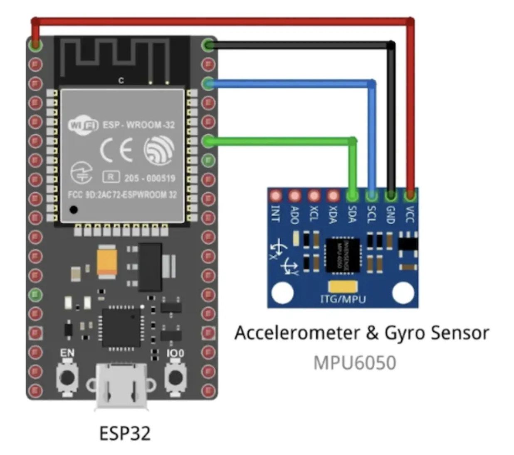
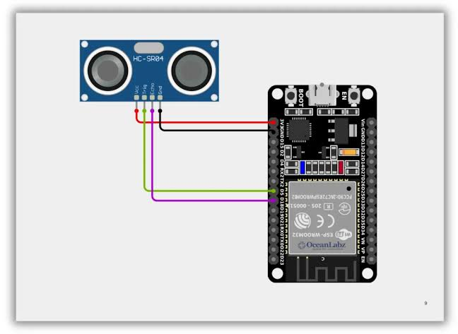
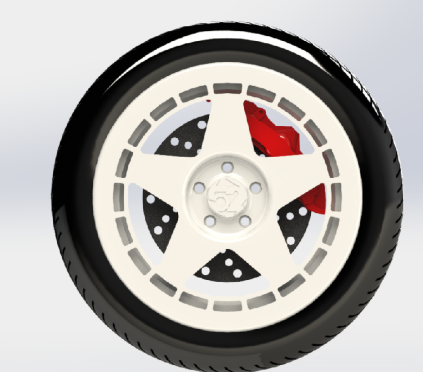
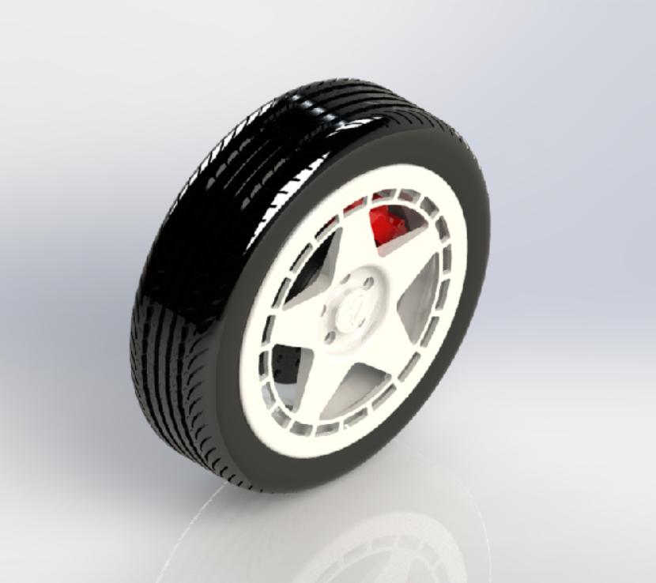
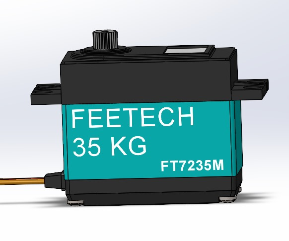

Hardware Showcase
Component Gallery
Key hardware components, CAD renders, and robot photos powering SarcoOS
Hardware Components

ESP32
Dual-core MCU with WiFi + BLE

BTS7960
High-current H-Bridge motor driver

TB6600
Stepper motor driver for NEMA23

Feetech Servos
95kg shoulder & 35kg elbow joints

MPU6050 IMU
6-DOF inertial measurement unit

HC-SR04
Ultrasonic distance sensor
CAD Renders

Fifteen52 Rim
SolidWorks wheel design

Tire Assembly
Rim with Yokohama ADVAN tire

Servo 35kg CAD
Tower Pro MG-995 exploded view